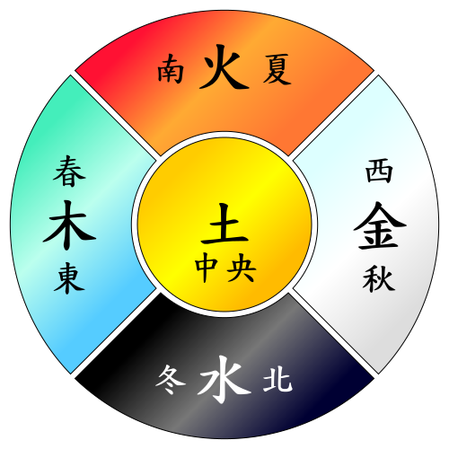

第五の季節：土用

（この記事は2021年7月頃にあちこちで書いたものを抜粋して再構成したものです）
2022-04-17 は望（満月）で「土用の入り」である。 というわけで今回は「土用」に関する小咄などを。
土用の入り
「土用」は四季を無理くり五行説に当てはめた弊害（笑）でできた，第五の季節とでも言うべきものだ。 春＝木，夏＝火，秋＝金，冬＝水とすると「土」が余ってしまうので，各季節から $1/5$ ずつ拝借して作ったのが「土用」の元々の起源らしい。

いわゆる「平気法（または恒気法）1」では没日を除いた1年の長さは360日なので，各季節の $1/5$ は $(360 \div 4) \div 5 = 18\mathrm{日}$ となる。 これが「土用は各季節の最後の18日間」などと言われる所以である。
現在の「土用の入り」は雑節のひとつとして残っている。 定義は
現在では土用の入りは太陽黄経が297°、27°、117°、207°となる日として定義されます
である。 目安としては
土用 太陽黄経 月日 冬 297° 1月17日ごろ 春 27° 4月17日ごろ 夏 117° 7月19日ごろ 秋 207° 10月20日ごろ
となるようだ。 ちなみに「土用の明け」は各季節が始まる立春（315°），立夏（45°），立秋（135°），立冬（225°）の前日である。 2022年は
| 日付 | 曜日 | 内容 |
|---|---|---|
| 2022-01-17 | 月 | 土用の入り |
| 2022-02-04 | 金 | 立春 |
| 2022-04-17 | 日 | 土用の入り |
| 2022-05-05 | 木 | 立夏 |
| 2022-07-20 | 水 | 土用の入り |
| 2022-08-07 | 日 | 立秋 |
| 2022-10-20 | 木 | 土用の入り |
| 2022-11-07 | 月 | 立冬 |
という関係になる。 1年は360°なので，各季節の「土用」の期間は，先程の計算式と同じく $(360 \div 4) \div 5 = 18°$ となる。 というわけで，さきほどの「土用の入り」の定義となるわけだ。
土用の丑の日
「土用の丑の日」は江戸時代の有名なプロモーションのおかげなのか夏の土用が有名だが，「土用」は各季節ごとにあるし，その中で「丑の日」は最低1日（最大2日）はあることになる。 ウナギ好きの方，よかったですねぇ。 各季節ごとにウナギを喰い散らかす口実ができたっスよ（笑）
以前「十干十二支を数え上げるパッケージを作ってみた」で自作パッケージを紹介したが，その後，パッケージの移行に伴い goark/koyomi パッケージに統合した。 これを使って2022年春の土用期間の干支を数えてみよう。 コードはこんな感じ。
package main
import (
"fmt"
"github.com/goark/koyomi/value"
"github.com/goark/koyomi/zodiac"
)
func main() {
start, _ := value.DateFrom("2022-04-17")
end, _ := value.DateFrom("2022-05-05")
for d := start; d.Before(end); d = d.AddDay(1) {
干, 支 := zodiac.ZodiacDayNumber(d)
fmt.Printf("Day %v is %v%v\n", d, 干, 支)
}
}
これを実行すると
$ go run sample.go
Day 2022-04-17 is 庚子
Day 2022-04-18 is 辛丑
Day 2022-04-19 is 壬寅
Day 2022-04-20 is 癸卯
Day 2022-04-21 is 甲辰
Day 2022-04-22 is 乙巳
Day 2022-04-23 is 丙午
Day 2022-04-24 is 丁未
Day 2022-04-25 is 戊申
Day 2022-04-26 is 己酉
Day 2022-04-27 is 庚戌
Day 2022-04-28 is 辛亥
Day 2022-04-29 is 壬子
Day 2022-04-30 is 癸丑
Day 2022-05-01 is 甲寅
Day 2022-05-02 is 乙卯
Day 2022-05-03 is 丙辰
Day 2022-05-04 is 丁巳
となった。 これによると 2022-04-18 と 2022-04-30 が丑の日のようだ。 おー，2回もある。
ブックマーク
参考図書

- 天文年鑑 2022年版
- 天文年鑑編集委員会 (編集)
- 誠文堂新光社 2021-11-22
- 単行本
- 441662140X (ASIN), 9784416621400 (EAN), 441662140X (ISBN)
- 評価
天文ファン必携。2022年版。

- 新こよみ便利帳―天文現象・暦計算のすべて
- 暦計算研究会 (編集)
- 恒星社厚生閣 1991-05-01
- 単行本
- 4769907001 (ASIN), 9784769907008 (EAN), 4769907001 (ISBN)
- 評価
今となっては古い内容だが，暦や天体位置の一覧表が載っていて当時はそれなりに役に立った。

- プログラミング言語Go (ADDISON-WESLEY PROFESSIONAL COMPUTING SERIES)
- Alan A.A. Donovan (著), Brian W. Kernighan (著), 柴田 芳樹 (翻訳)
- 丸善出版 2016-06-20
- 単行本（ソフトカバー）
- 4621300253 (ASIN), 9784621300251 (EAN), 4621300253 (ISBN)
- 評価
著者のひとりは（あの「バイブル」とも呼ばれる）通称 “K&R” の K のほうである。この本は Go 言語の教科書と言ってもいいだろう。と思ったら絶版状態らしい（2025-01 現在）。復刊を望む！

{kind=link}
-
「平気法」は天球上の太陽の運行速度を一定とみなして（平均太陽）1年を均等に24等分する方法。これにより一気の長さは $365 \div 24 = 15.2\mathrm{日}$ で一定となる。没日を除けばちょうど15日。ちなみに現行暦は「定気法」がベースになっている。定気法は太陽の視黄経を角度で24等分（各15°）する方法で「太陽黄経」が定義の基準となる。 ↩︎